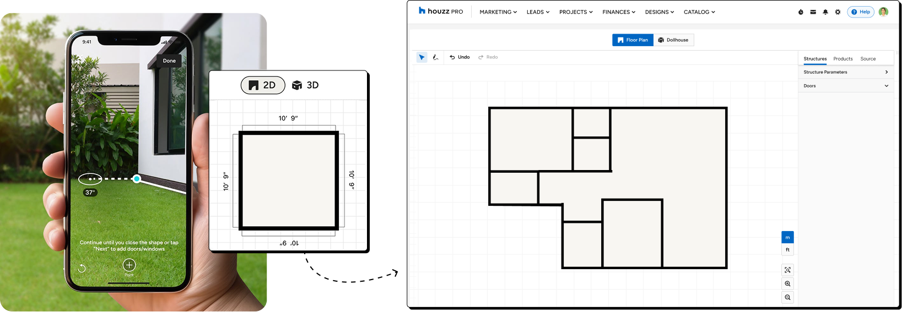
Mobile scanning worked well for a single room, but real projects rarely stop there. Multi-room removed that limit - making mobile capture useful for complete, connected floor plans, and moving pros toward finishing a whole plan on site.
Mobile scan brought floor plan creation into the space itself: pros could capture walls, corners, and openings on site. But real renovation projects often extended beyond a single room.
I don't want to stop after every room. I need the scan to keep up with the way I move through the home.
Pro · discovery
I need to know where this new room connects before I move on, otherwise I'm not sure I can trust the plan.
Pro · usability session
The problem
The scan stopped at one room.
For connected layouts, pros had to move back to desktop and manually assemble rooms into one plan.
The goal
Keep the scan moving across rooms - one connected plan, without losing momentum or orientation.
Pros could scan a single room on mobile, then continue the full plan later on desktop - one job split across two places, with the connecting work left to do by hand.
Existing experience before the redesign.
The flow was optimized for capturing one closed room quickly and accurately.
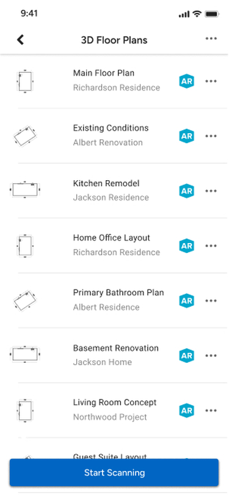
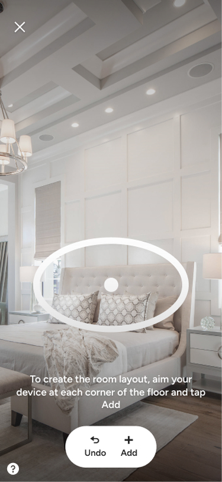
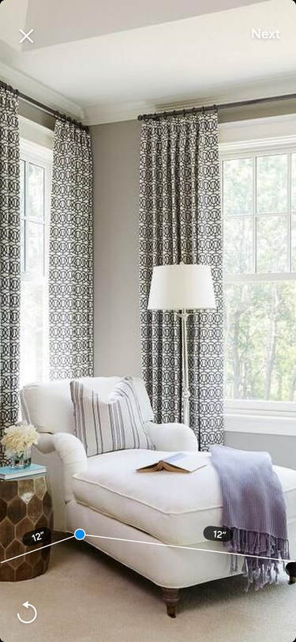
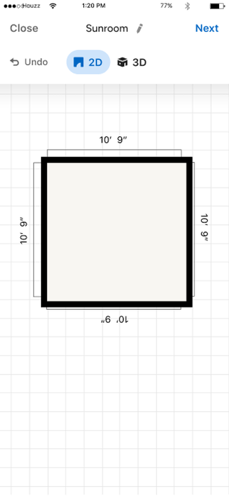
To support full spaces, the product needed to connect separate scans into one shared map. But connected scans also brought more guidance, decisions, and recovery moments into the flow.
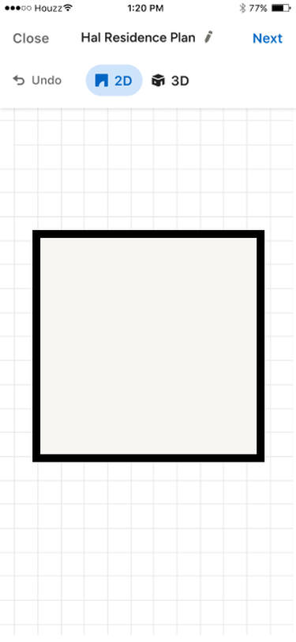
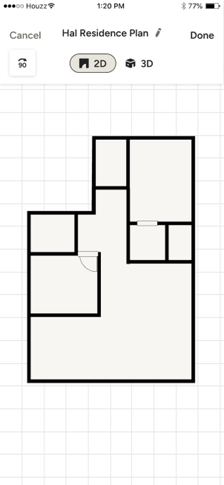
Geolocation was meant to bridge the gap - estimating where each room scan was captured, so separate scans could line up and connect into one floor plan.
The friction
Helpful alone. Heavy together. What started as guidance became friction, forcing users to stop, read, confirm, and repeat.
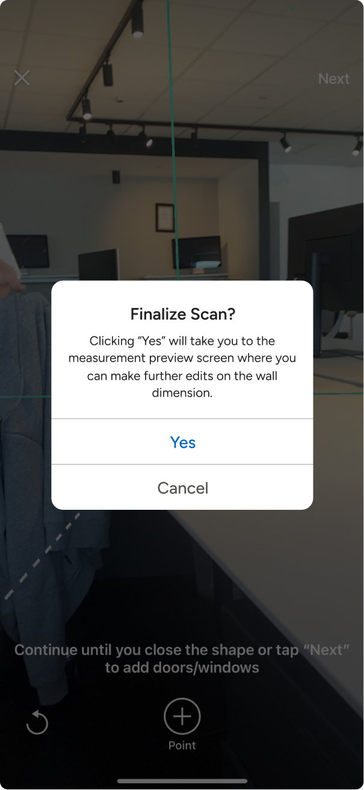
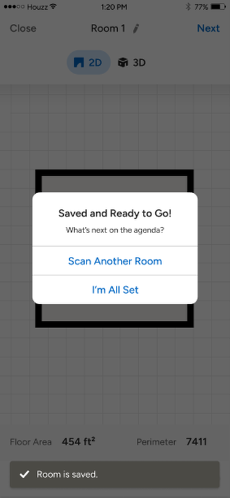
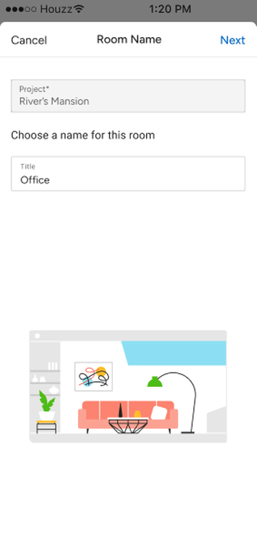
Geolocation was meant to give every room a shared reference, but it didn't always hold. When it drifted, rooms behaved like separate scans - making alignment, rotation, and stitching unreliable.
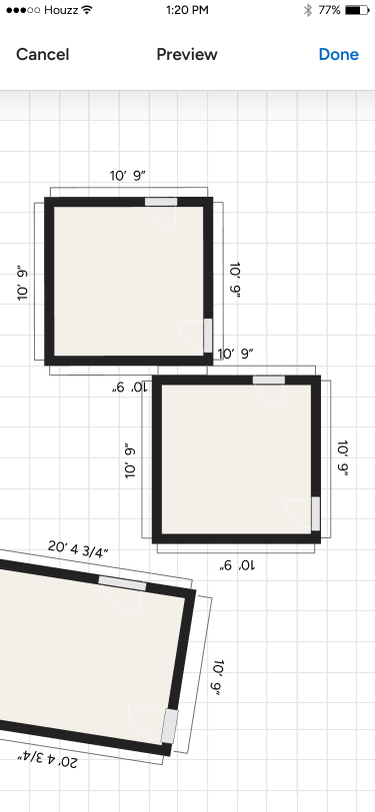
A tutorial could explain how to connect rooms, but it couldn't remove the uncertainty when the reference drifted. Rather than depend on perfect alignment, the flow had to help users adjust, recover, and continue.
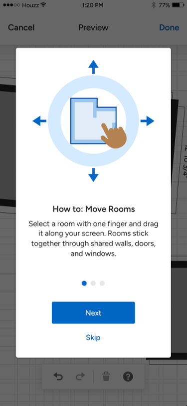
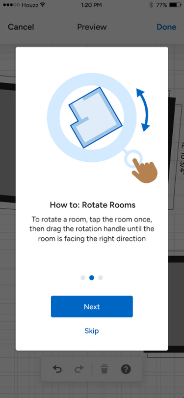
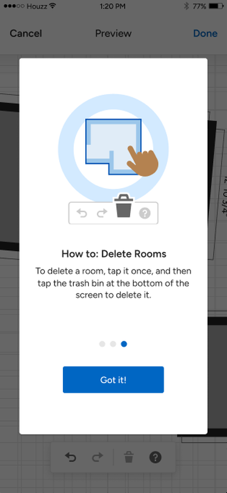
That shifted the problem from teaching the feature to making the flow resilient: keep users inside the scan, allow corrections in place, and separate the decision to continue from the decision to finish.
01
Instead of stopping users with separate instruction screens.
02
Instead of sending users out of the capture flow.
03
Instead of making one "Next" button carry two decisions.
A single "Point" action became a persistent action bar, and the plain white dashed edge became a richer turquoise line system - making edges, corners, and room continuity easier to read during capture.
Users could place doors and windows, fine-tune their position, and adjust their dimensions on the spot - without interrupting the scan.
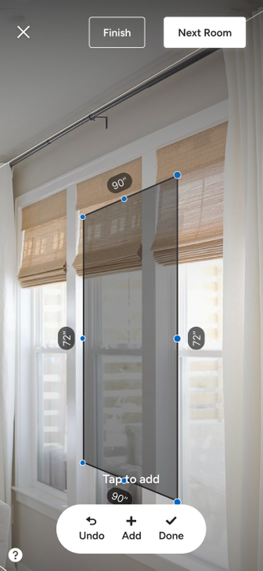
The flow separated two decisions: scan another room, or finish and move to preview.
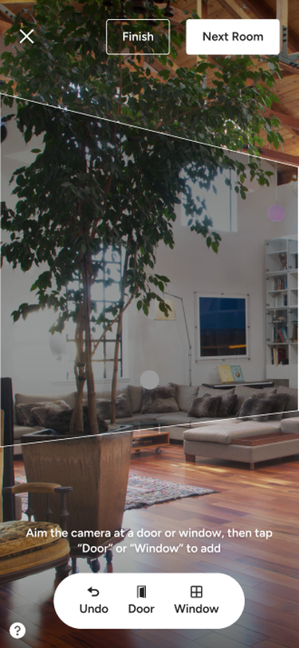
Together, these changes kept users inside the capture experience: scan the room, build the plan, continue to the next room, or finish and move to preview.
Capture walls, corners, and openings
The connected plan grows room by room
Add another room, or complete the capture
Review the full connected plan
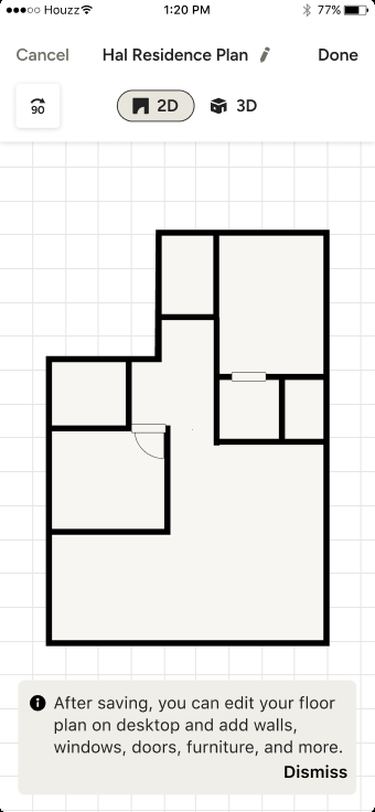
After launch, connected capture moved from an edge case to a regular part of mobile floor plan creation - a sign the flow was helping pros build connected plans on site.
Share of mobile scans using multi-room, at its peak
Room-to-room continuation events
Monthly active user growth of 3D Floor Plans - product-wide context, not caused by this feature
The challenge wasn't just scanning more rooms; it was helping users stay oriented, keep momentum, and trust the plan as it grew.
01
Users needed to understand where they were as the plan grew across rooms.
02
Instructions worked best when they appeared inside the scan, not as extra dialogs.
03
Users needed to fix, continue, or finish without getting blocked.